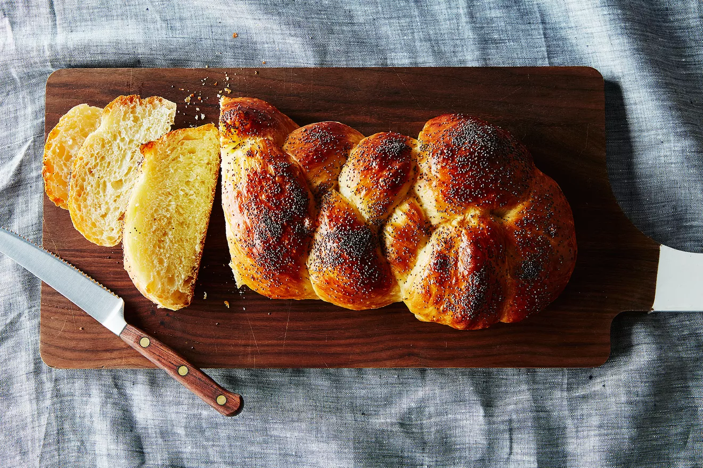

Challah recipe
Delicious and foolproof challah bread!
Ingredients
- Flour
- Instant yeast
- Olive oil
- Honey
- Eggs
Steps
- Combine the dry ingredients.
- Combine the wet ingredients.
- Combine the wet and dry ingredients until well combined. Let it rest for 10 minutes.
- Fold the dough over itself, rotating the bowl by a quarter, 8 folds in total. Cover with plastic wrap and let it sit for 30 minutes.
- Repeat the previous step 4 more times.
- Store the dough in the fridge overnight, for 16-24 hours.
- Roll out the dough onto a well-floured surface. Fold it over a few times to round out the shape.
- Make 3 strands of dough, and braid them together.
- Let the loaf sit for an hour or more at room temperature, until it's proofed enough. Preheat the oven to 350 degrees.
- Bake the loaf for about 30 minutes until the crust is golden brown.
- Remove from the oven and let cool for 10 minutes.
- Enjoy!